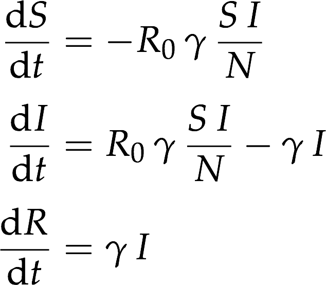
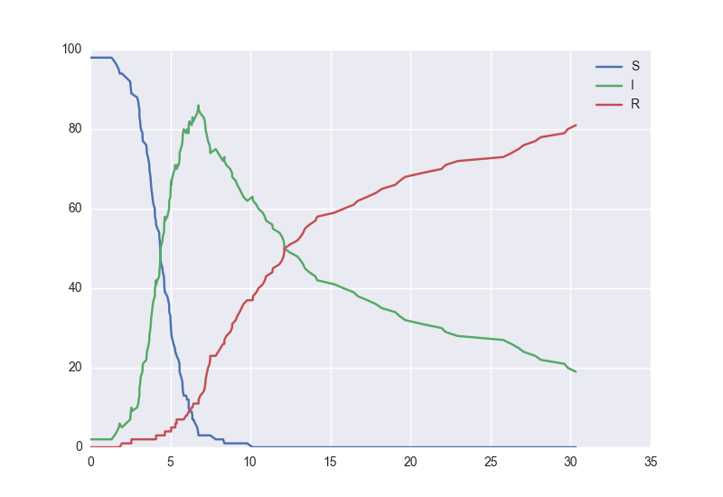

Quick Start
In this quick-start, we'll implement the Susceptible-Infected-Recovered epidemiological model. This compartmental model is typically described by a system of deterministic, ordinary differential equations :

In the case of small populations, the continuous property of the state space can be a poor assumption, and we may prefer to simulate each individual in the population as whole entities. We'll phrase this model in the language of discrete-state stochastic processes, particularly that of continuous-time Markov chains.
Using the Wizard
Start by creating a model with the help of the wizard.
import scotch
model = scotch.model()
model.wizard()
Insert screenshot of wizard results here
We've created an SIR epidemiological with three state variables : S, I, and R. Individuals move from the susceptible state S to the infected class I at a rate proportional to S and I as the infection propagates, and then infected individuals move into the Recovered state R at a rate proportional to the number of individuals in I.
We can then immediately simulate this system using the Gillespie algorithm and plot the results, up to some final time.
model.plot(30)

Using a scotch model file
scotch models are defined in JSON format. Whilst the wizard can construct a complete scotch model file, you could also define one yourself, which might be easier for more complex models. For the SIR model above, it would look like this :
{
"States" : [
"S",
"I",
"R"
],
"InitialConditions" : {
"S" : 99,
"I" : 1,
"R" : 0
},
"Parameters" : {
"r0" : "18",
"gamma" : "1/14"
},
"Reactions" : [
{
"r0 * gamma * S * I / (S+I+R)" : {
"S" : -1,
"I" : 1
}
},
{
"gamma * I" : {
"I" : -1,
"R" : 1
}
}
]
}
Simulating the model
Watch this space.
Sampling trace expectations and credible intervals
Watch this space.